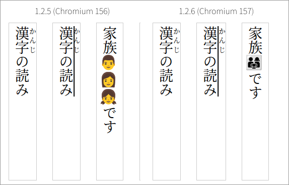

Release date: 2026-11-07 / Chromium: 157.0.8103.38 / Language: 日本語 | English
The rendering engine is now Chromium 157. Four points for developers working with Japanese vertical text:
text-decoration-inset, which shortens both ends of an
underline, now works (including in vertical text)Startup is also faster (the page finishes loading about 0.3 seconds sooner in our measurement).
This build4 is a Linux package (for example
blinkgtk-1.2.6-build4-linux-x86_64.tar.gz). It fixes how
memory is handled. Chromium is 157.0.8103.38, the same as build1 to
build3, and nothing changes in how you use BlinkGTK. If you use build3
or earlier, please update to build4.
This build3 is a Linux package (for example
blinkgtk-1.2.6-build3-linux-x86_64.tar.gz). It fixes how
memory is handled. Chromium is 157.0.8103.38, the same as build1 and
build2, and nothing changes in how you use BlinkGTK. If you use build2
or earlier, please update to build3.
The description of
blink_web_view_set_presentation_policy() in the public
header blink_gtk.h now also says that a capture taken while
presentation is stopped (BLINK_PRESENT_WARM) can put a
frame on screen. Do not rely on the screen staying unchanged, or on it
being updated, during such a capture.
This build2 is a Linux package (for example
blinkgtk-1.2.6-build2-linux-x86_64.tar.gz). It fixes how
memory is handled. Chromium is 157.0.8103.38, the same as build1, and
nothing changes in how you use BlinkGTK. If you use build1, please
update to build2.
This build1 is the Linux package (for example
blinkgtk-1.2.6-build1-linux-x86_64.tar.gz). Chromium is
157.0.8103.38. The changes in this version are described in the sections
below.

Figure 1: The same page opened in 1.2.5 and 1.2.6 From left: a line with ruby only, a line where the ruby-annotated text is underlined, and a line with a family emoji.
In Japanese vertical text, an underline
(text-decoration: underline) is drawn on the right side of
the characters, which is the same side as the ruby. Up to 1.2.5, the
line and the ruby were drawn in the same place, so the line ran through
the ruby (second column from the left in Figure 1).
In 1.2.6, the ruby of underlined text moves outside the line, so they no longer overlap. Lines with ruby only are laid out as before.
<p style="writing-mode: vertical-rl" lang="ja">
<span style="text-decoration: underline"><ruby>漢字<rt>かんじ</rt></ruby></span>の読み
</p>Emoji such as 👨👩👧 are several emoji joined by an invisible joining character (ZWJ) and are shown as a single emoji. Up to 1.2.5, vertical text split them into their parts, so the three people were stacked vertically (third column from the left in Figure 1). In 1.2.6 they are shown as one emoji, as in horizontal text.
text-decoration-inset)This property moves the start and end of an underline inward from the edges of the text. In 1.2.3 to 1.2.5 it was not available and was ignored. It works from 1.2.6. In vertical text, the top and bottom ends of the line move inward.
/* move both ends of the line 2px inward */
.underlined { text-decoration: underline; text-decoration-inset: 2px; }text-decoration-inset: 10px, and
measured the length of the line in pixels. In 1.2.6 it goes from 200px
to 180px, 10px shorter at each end. In 1.2.5 the value is ignored and
the line stays 200px.In Chromium 157, a wavy underline
(text-decoration: underline wavy) no longer restarts its
wave pattern at the boundary of an inner element such as
<em>; it continues across it. This applies to
horizontal text only.
In vertical text, the wave pattern still restarts at element boundaries in 1.2.6 (the same as 1.2.5). If you put emphasis or other elements inside a wavy underline in vertical text, the wave shifts at the boundary.
<em> around part of it, and compared the pixel
positions of the wavy line. In horizontal text the difference disappears
in 1.2.6. In vertical text the same difference remains in both 1.2.5 and
1.2.6.In Chromium 157, when a vertical line ends with a closing bracket or similar, the line can break before using its full length. The line is only partly filled and wraps at about half its length. This happens because Chromium 157 turned off by default the processing that prevented it (a crash had been found on another page).
1.2.6 includes the upstream fix that resolves the crash and turns this processing back on. Upstream, this fix is expected to arrive in Chromium 158.
Startup is faster, and the file picker APIs keep working. We restored the startup optimization removed in 1.2.5-build5 (an option that reduces symbol lookups when loading shared libraries), except for the part that caused applications to exit abnormally in build2 to build4. In 1.2.6 we confirmed that calling the file picker APIs from a page does not make the application exit.
Startup time (one machine, Intel Core i5-10310U with Fedora 45; a test page; median of 5 runs per rendering path; measured 2026-11-04):
| Point | Rendering path | 1.2.5-build5 | 1.2.6 | Difference |
|---|---|---|---|---|
Initialization (blink_gtk_init()) completes |
software | 493 ms | 334 ms | −159 ms |
| First frame delivered | software | 1,259 ms | 917 ms | −342 ms |
| Page finished loading | software | 1,237 ms | 895 ms | −342 ms |
| Page finished loading | EGL | 1,387 ms | 1,054 ms | −333 ms |
The Chromium version also changed, so we did not measure how much of the improvement comes from the startup optimization alone. We measured on one machine with one page.
When only part of a page changes (for example, an animated page), BlinkGTK redrew the whole view every time new content became active. This is now off by default. It had been added to prevent blank pages, but in our checks of the current version no blank pages appeared without it. A separate mechanism (redrawing the whole view when a redraw request is missed) remains.
BLINKGTK_120_ACT_REDRAW=1. If you see
a blank page in 1.2.6, please check whether this setting makes it go
away and let us know.text-overflow accepts a string. Overflowing text is
marked with the string you specify instead of "…" (for example,
text-overflow: "… more"). In 1.2.5 the value was
ignoredfont-style: italic and
oblique use the font's italic axesdrawElement)srgb-linear and display-p3-linearChromium 157 removed 27 settings (flags that switch features on and
off). The ones that were on by default in 1.2.5 are features that became
permanently on, with their flags cleaned up. For example, we confirmed
that dividing units in calc() and
overscroll-behavior: chain work in both 1.2.5 and
1.2.6.
This release uses Chromium 157.0.8103.38, which includes 213 Chromium security fixes (7 Critical, 77 High, 75 Medium, 54 Low). If you use the previous release (1.2.5-build5, Chromium 156), please upgrade to 1.2.6. The list of fixes is in the official Chromium announcement (Stable Channel Update for Desktop, 2026-11-03).
When a Chromium stable update contains security fixes, BlinkGTK releases a build that includes them (1.2.5 build3 and build4 are examples). Fixes are not backported to older releases, so please use the latest release.
Check the rows that match how you use BlinkGTK. Each row links to the details.
This table is for the Linux version. If you use BlinkGTK for Windows, see Upgrading from an earlier version in the Windows guide.
| How you use it | What changes | What you need to do |
|---|---|---|
| Underlining ruby-annotated text in vertical text | The ruby moves outside the line (no overlap) | If your layout has little space outside the ruby, check how the space between lines looks. Otherwise nothing (details) |
| Using emoji in vertical text | Joined emoji take the height of one character | Nothing (details) |
Pages that specify text-decoration-inset |
Both ends of the line are shortened as specified (ignored up to 1.2.5) | Check that the result looks as intended with your values (details) |
| Using wavy underlines in vertical text | No change (the wave restarts at element boundaries) | Nothing (details) |
| Showing animated pages or pages where only part changes | The whole view is no longer redrawn each time new content becomes active | Nothing. If you see a blank page, try
BLINKGTK_120_ACT_REDRAW=1 (details) |
| Applications that care about startup speed | Startup is faster (the page finishes loading about 0.3 seconds sooner in our measurement) | Nothing (details) |